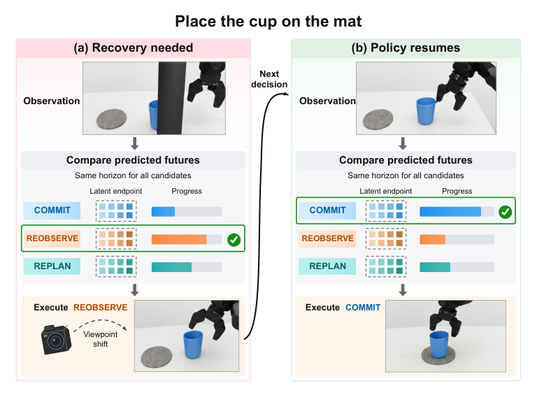
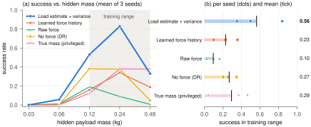

Chenru Wen
I am an M.Sc. student in Robotics at MBZUAI, advised by Xingxing Zuo and Dezhen Song. I work on robot learning for manipulation, focusing on recovery from execution failures by forecasting the outcomes of candidate actions. I am currently exploring how physical estimates and their uncertainty should enter dexterous policies.
Before MBZUAI, I received a B.Eng. in Computer Science from the Yao Class at Tsinghua University. I was a research intern at OpenDriveLab, Shanghai Innovation Institute, from June to September 2026, and a visiting research intern at UC San Diego with Zhuowen Tu in 2024.
I am applying to PhD programs for Fall 2027.
Publications

A frozen VLA policy recovers from occlusion and object slip by comparing forecast futures of continuing, moving the camera, and replanning the arm, with gains in simulation and on a real dual-arm robot.
Ongoing
How should estimates of hidden physics enter a learned dexterous policy?
Target RSS 2027 · preliminary results in simulation
A multi-fingered hand carries containers that look identical but hide different fill mass, and five policies differ only in what they receive.

Other projects
Localization on non-metric maps
Localizing a walking camera on a printed visitor map, with no GPS or metric map, from local odometry and a few named landmarks.
Causal analysis of appearance shifts in VLA policies
A change in a target's appearance alone changed a real robot's grasp. I rebuilt the case as matched-state experiments with a fine-tuned π0.5 and used activation replacement to trace which representations carry the change into the action.
Real-robot VLA platform
A dual-arm AgileX PiPER with a head camera on a pan/tilt unit and lift. I integrated openpi with it (ROS 2 client, Docker policy server, real-time chunking), brought up open-source drivers for the camera mount and lift, and ran every ForkCast real-robot trial on it.